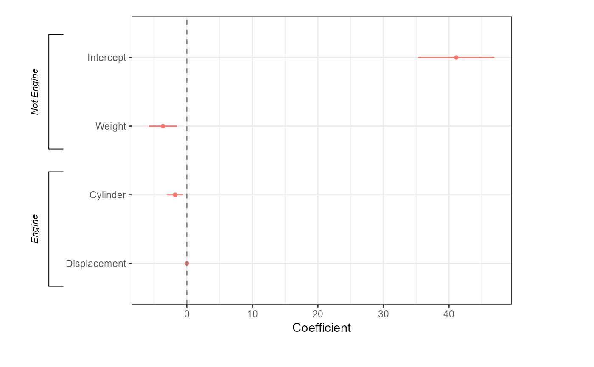

R/add_brackets.R
add_brackets.Rdadd_brackets draws brackets along the y-axis beyond the plotting area of a dot-and-whisker plot generated by dwplot, useful for labelling groups of predictors
add_brackets(p, brackets, fontSize = 0.7, face = "italic", ...)
| p | A plot generated by |
|---|---|
| brackets | A list of brackets; each element of the list should be a character vector consisting of (1) a label for the bracket, (2) the name of the topmost variable to be enclosed by the bracket, and (3) the name of the bottom most variable to be enclosed by the bracket. |
| fontSize | A number defining the size of the bracket label. The default value is .7. |
| face | A typeface for the bracket labels; options are "plain", "bold", "italic", "oblique", and "bold.italic". |
| ... | Extra arguments to pass to |
The function returns a ggplot object.
The brackets are drawn by `grid` functions. Apart from font size and typeface, users can customize the appearance of the bracket labels by setting `gpar` arguments in `add_brackets`.
#> #>#> #> #>#> #> #>m1 <- lm(mpg ~ wt + cyl + disp, data = mtcars) two_brackets <- list(c("Engine", "Cylinder", "Displacement"), c("Not Engine", "Intercept", "Weight")) {dwplot(m1, show_intercept = TRUE) %>% relabel_predictors("(Intercept)" = "Intercept", wt = "Weight", cyl = "Cylinder", disp = "Displacement") + theme_bw() + xlab("Coefficient") + ylab("") + theme(legend.position="none") + geom_vline(xintercept = 0, colour = "grey50", linetype = 2)} %>% add_brackets(two_brackets)